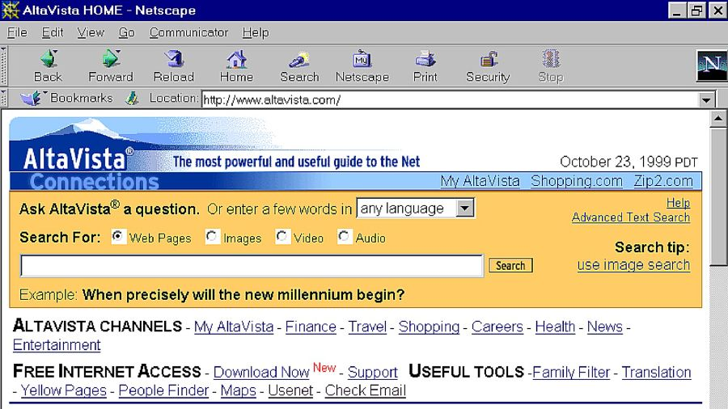

Web 1.0 refers to the early stage of the World Wide Web, characterized by static web pages and limited user interaction.
Key features
- Static content
- Read-only websites
- Limited multimedia
Limitations
Web 1.0 lacked interactivity and user-generated content, which led to the evolution of Web 2.0.